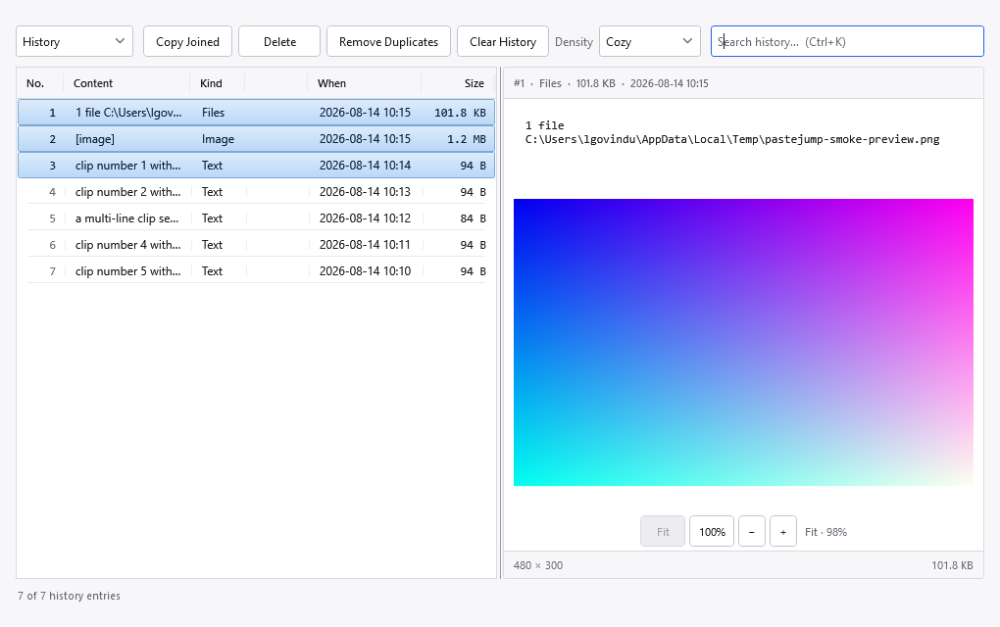
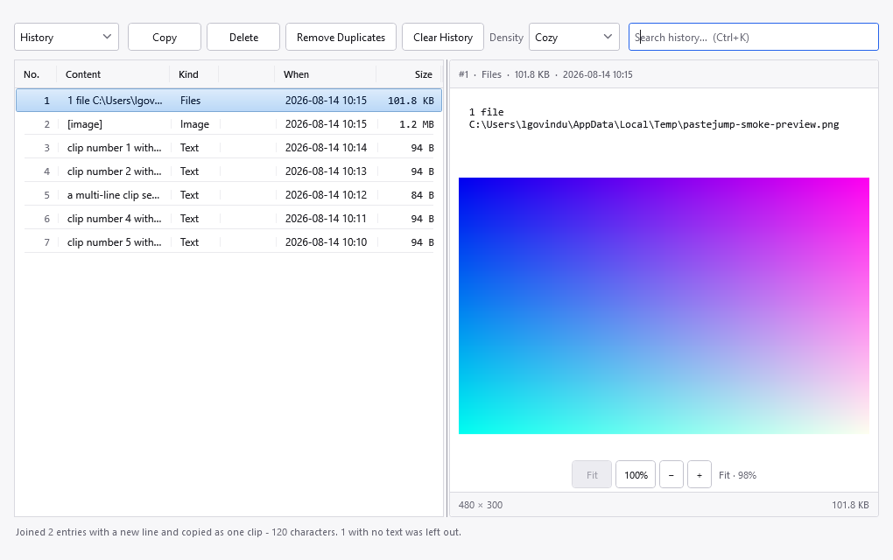
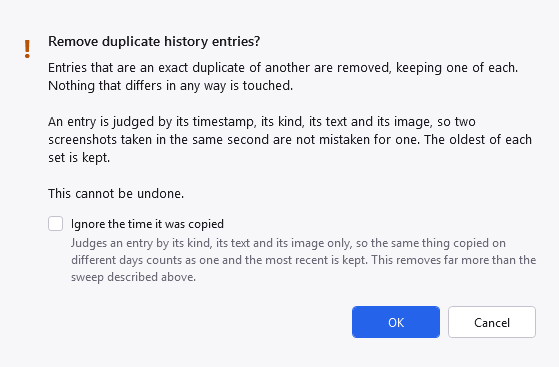

The History view. The row selected here is a copy of an image file, so the preview pane shows the picture below the path, with its resolution and size along the bottom.
Left-click the tray icon to open it. One window shows both stores — the switch at the top-left chooses which.
The History view. The row selected here is a copy of an image file, so the preview pane shows the picture below the path, with its resolution and size along the bottom.
The combo box on the left switches between Clips and History. Both use the same columns, which is the point: seeing them side by side is what makes the difference legible rather than something to be explained. See Clips and history for what each one is.
Clips view adds a Pin button and renames Clear History to Clear Clips, so the button always names what it will actually empty.

The Clips view: the same columns over the other store, with Pin added. The status line counts what the gesture can reach rather than what has been logged.
| Button | What it does |
|---|---|
| Pin (Clips only) | Pins or unpins the selected clips. Pinned clips sort first and survive Delete All. |
| Copy | Puts the selected entry back on the clipboard and adds it to the stack as the newest clip, so
Ctrl+V offers it first. Enter, or a double-click, does the same.
With more than one row selected it reads Copy Joined instead — see below. |
| Delete | Removes the selected rows from whichever store is shown. The Delete key does the same. |
| Remove Duplicates | Collapses entries that are an exact duplicate of another, keeping one of each. Acts on the store being shown. See below. |
| Clear History / Clear Clips | Empties the store being shown. Asks first, and says plainly that the other store is not affected. |
Select several rows — Ctrl+click, or Shift+click for a run — and Copy
changes to Copy Joined. Pressing it produces a single clip containing all their text, so it pastes
once rather than several times. Enter does the same.

Three rows selected. The button says what it will do; nothing else on screen hints that joining exists.

Afterwards the status line accounts for every row you selected, including any it could not use.
| Order | Top to bottom as shown, not the order you clicked. A grid cannot report the order rows were picked in
— a Shift+click has no order at all — so this is the only rule you can predict before
pressing the button. During the gesture, where the sequence is knowable, the order you marked in is used
instead. |
| What goes between | A new line by default; set Separator When Joining Clips under
Settings, History. Invisible characters are written as \n,
\t and \r\n; anything else is used literally, so ", " works as
typed. |
| Images are left out | And counted, so the status line can say so. Two pictures cannot be concatenated into one, and a file copy does join — its text is the paths, which is one of the more useful cases. |
| Double-click still copies one | A plain click collapses the selection to the row under the pointer, so by then there is only one row and joining cannot be what was meant. |
The same thing works during the gesture, without opening this window: press J to mark clips and
release Ctrl. See the gesture.
The box on the right filters the list as you type, with a ✕ at its end to clear it. Ctrl+K,
Ctrl+E or Ctrl+F jumps to it; Esc clears
it. History search is full-text and matches on word prefixes, so conn finds
connection.
The status line at the bottom says how many rows are shown against how many exist, and says so explicitly when it is showing a subset rather than leaving two numbers to be compared. How many rows are loaded at once is under Settings, History.
Selecting a row shows it on the right: the text, the image, or the list of copied files. When the selected entry is a copy of an image file, the pane shows the picture below the path, with its resolution on the left and its size on the right.
Hovering a row shows the same facts as a tooltip, and for an image it shows a medium-sized thumbnail too — enough to find the picture you are after without selecting each one in turn. The thumbnail is read only when the tooltip appears, so scrolling a long list costs nothing.
A picture opens fitted to the pane and never enlarged beyond its own size, so what you see is what was copied. The row of controls underneath changes that.
| Control | What it does |
|---|---|
| Fit | Back to fitting the pane. Also 0. |
| 100% | One screen pixel per image pixel, which is the setting to judge sharpness by.
Also 1, or a double-click on the picture. |
| − / + | Out and in, a quarter at a time, starting from whatever you are looking at. |
| Ctrl + scroll | Zooms around the pointer, so the detail under it stays under it. |
| drag | Pans, whenever the picture is larger than the pane. The pointer becomes a hand when there is something to move, so you can tell before you try. |
The readout on the right says the scale in force — Fit · 83% while fitting, or the plain percentage once you have chosen one. The keys work when the picture has the focus, which a click on it gives. Changing rows returns to Fit: a zoom is something you did to one picture, not a preference.
Importing from Clipjump was not idempotent before this version: the dialog said entries already imported were skipped, and nothing checked. Anyone who ran the import more than once has a copy of every entry per run — four runs meant four of everything.
Remove Duplicates repairs that. It asks first, and it is precise about what counts as a duplicate:
| In History | An entry is judged by its timestamp, its kind, its text and its image. Two screenshots taken
in the same second are therefore not mistaken for one another, even though both preview as
[image]. The oldest of each set is kept, because a history entry is a record of when
something was copied. |
| In Clips | A clip is judged by its content, which is the same test the gesture uses to recognise a re-copy. The newest of each set is kept, and a pinned clip always wins — its position in the stack is what you navigate by, and a pin is a deliberate act. |

The confirmation for the History view. The option that widens the sweep is part of the question rather than a setting elsewhere, so the consequence can be spelled out beside it.
Ignore the time it was copied, in the confirmation itself, widens what counts as a duplicate: with it ticked an entry is judged by its kind, its text and its image alone, so the same thing copied on Monday and again today counts as one and the most recent is kept. Without it the timestamp is part of the match, so those two are left alone and the oldest of each set survives. The two keep opposite rows on purpose — when every copy in a group happened at the same instant they are interchangeable, and when they did not, the recent one is the one whose date tells you something true.
It removes far more than the ordinary sweep, since a phrase you paste every day collapses to a single entry, which is why it is not the default. It applies to history only: a clip is judged by content already, so the confirmation for Clips does not offer the choice at all.
Imports from this version onwards cannot create duplicates in the first place, so this is a repair tool rather than routine maintenance. Running it on a healthy store reports that it found nothing.
The Density control sets row spacing: Compact fits the most rows, Roomy is the easiest to hit with a mouse. It is the same setting as the one under Settings, Appearance — it is repeated here because this is the window whose appearance it changes, and each place follows the other while both are open.